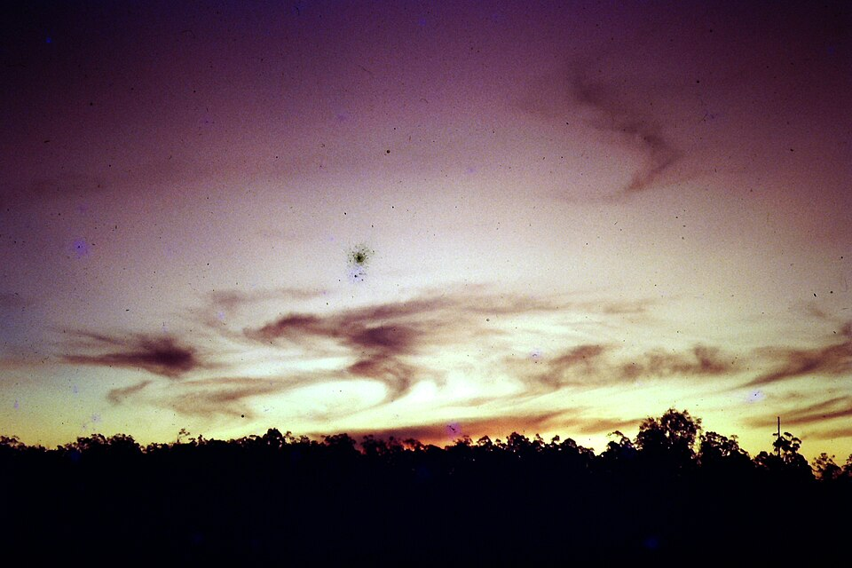
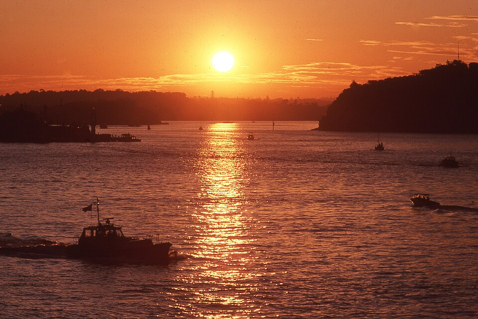
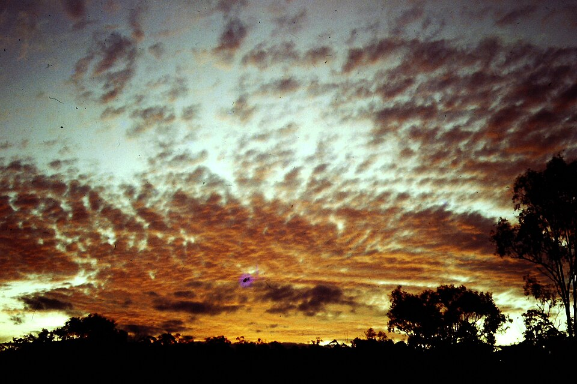

Cass // Studio
80s Sunset Cruise
six stills + one song






1 / 6
About this piece
An audiovisual experiment: late-afternoon 80s car culture, scored to the kind of power ballad that lives next to it on a mixtape. Images are sourced from Wikimedia Commons.
- image 1: File:Cirrus at sunset Wecker Rd Mansfield 1980s 06-28-2015 14.jpg (via wikimedia)
- image 2: File:Cirrus at sunset Wecker Rd Mansfield 1980s 06-28-2015 12.jpg (via wikimedia)
- image 3: File:Sunset with Boeing 747-230 D-ABZE Lufthansa (FRA, 1980s).jpg (via wikimedia)
- image 4: File:Sydney Harbour sunset 001aa.jpg (via wikimedia)
- image 5: File:Altostratus maculata at sunset Wecker Rd Mansfield 1980s 06-28-2015 6.jpg (via wikimedia)
- image 6: File:Chevrolet Camaro - Flickr - dave 7.jpg (via wikimedia)